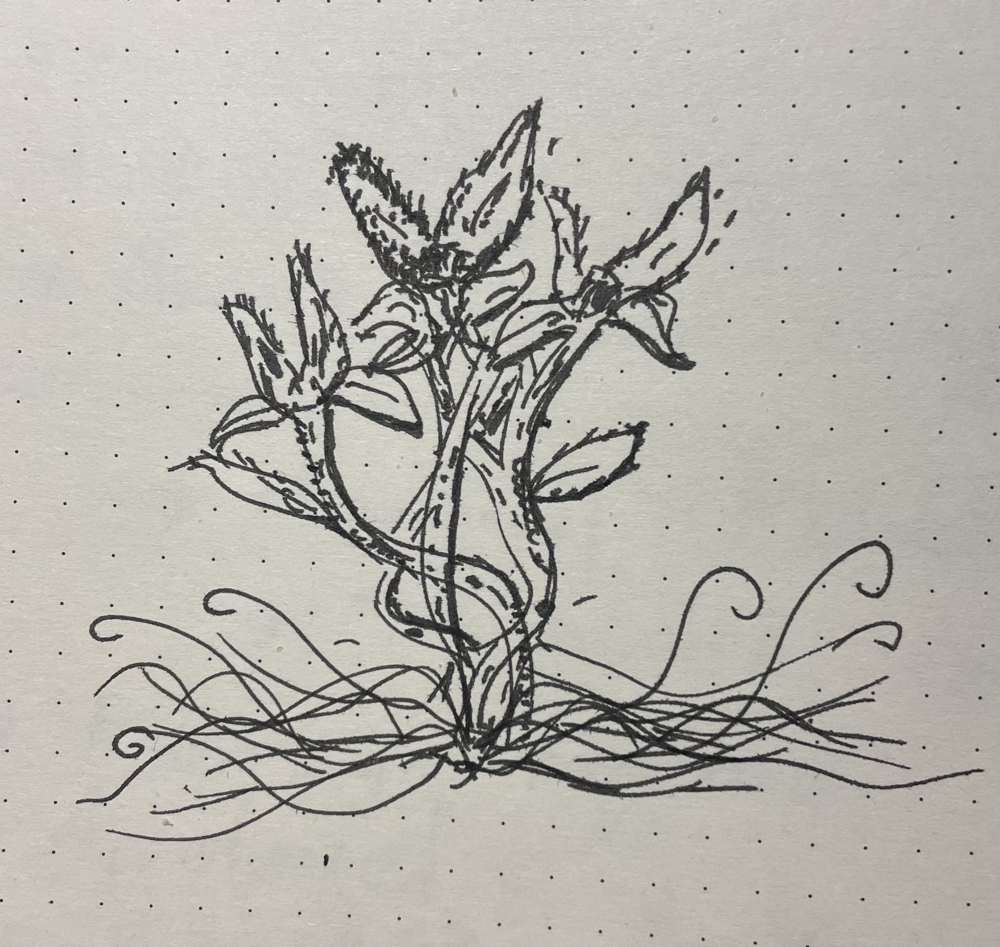

An abominated growth sprung from a withered seed…
2024-02-27

An abominated growth sprung from a withered seed.
Wilted tendrils lashed about its base,
catered to its vile needs.
A figure so obscene;
the carbon-based machine.
A plea of light struck the beast.
- In vein it did seem -
As the thing retorted
with such natural shades of green.
Wrought from hell this evil was
the carbon-based machine.
Sequences of stems contorted,
dancing hideous scenes.
Sinful sap spewed out orifices
basting those made to see
the carbon-based machine.
It carried jaws sprung with tension,
lined with fate and sealed in death.
Restless souls found to it their way
and promptly buried their lives they left.
Bitter oils coaxed its malice.
Vibrating hairs released shrill screams.
Corpses piled to build its palace.
So onward grew the carbon-based machine.